A first-time general contractor's end-to-end walkthrough of the live app, treated purely as a user: no source-map hints, no privileged access. Every claim below is reproduced in the browser and captured as evidence.
TradePulse Pro is an impressive, fast, genuinely reactive demo whose core mechanics work — and whose trust surface repeatedly lies. The Convex-backed realtime loop, the ADR-0003 leveling arithmetic, deduct/void propagation, the audit stream and the AIA A401 lifecycle all behave correctly and survive real user actions. But on the surfaces a GC would rely on to trust the output — discovery provenance, "TDLR verified" badges, leveling savings, eval scores, tour narration and the download button — the product presents fabricated or stale data as verified fact.
Nothing found causes data loss or cross-project leakage. The failures are claims-integrity and presentational-sync failures, which for a procurement tool is the more commercially dangerous class: a GC acting on the numbers would be misled, not just annoyed.
Ranked by user harm. Full detail, reproduction steps and screenshots are in All findings.
| ID | Severity | Finding | Why it matters |
|---|---|---|---|
| BUG-16 | High | Fabricated contractors presented as "Active / Verified (TDLR)". Any project a real user creates gets placeholder names, sequential phone numbers and sequential licence numbers, one of them estimating@facebook.com — all badged as state-verified. | A GC could source a sub from fake compliance data. |
| BUG-12 | High | Download and Preview show different documents. Preview serves the true stored bytes; Download synthesises canned text chosen by filename from a dictionary shipped in the bundle. | The exported record can be legally wrong. |
| BUG-30/31 | High | The eval suite grades itself by asking a model to copy numbers already printed in the prompt. Headline "100% / 0.00% MAPE / Zero Cheating" overstates it; the same Run ID returns on re-run. | Validation evidence is not validation. |
| BUG-36 | Medium | The guided tour is a fixed script, not reactive. After a normal award it still narrates "$61,000 cheaper" while the live screen shows "+$33,000 True Variance" at $1,253,000. | The narrator contradicts the screen. |
| BUG-26 | Medium | "Buyout: 0/3 Awarded" while an agreement is executed. The stepper says "1 Award", the register says Execution 1/1, the KPI band says zero. | Award state is unreadable at a glance. |
| BUG-06 | Medium | "Leveled Buyout (Normalized)" is the sum of package budgets, not any bid. It is labelled as a normalized bid figure but no bids are involved. | A headline number that means something else. |
| BUG-18 | Medium | "Gaps Plugged: +$169,500" ≠ the $186,000 shown on the same screen (147k exclusions + 24k lead + 15k COI). The backend narrative uses 186k. | Two totals for one gap figure. |
| BUG-34 | Medium | Horizontal page overflow between ~640 and ~1210px. The nav stepper never shrinks, so laptops, tablets and 200%-zoom users must scroll sideways to read step one. | Layout breaks on common widths. |
| BUG-33 | Medium | The Judge Dock declares aria-modal="true" but does not trap focus, and ESC does not restore focus. Keyboard users tab into the obscured page behind the dialog. | Modal contract is only half-implemented. |
| BUG-01 | Medium | The New Project modal renders inside the sticky header, clipping 3 of 7 fields off-screen with no way to scroll to them. | The primary create flow is hard to complete. |
What was actually exercised, versus what is present but was not testable or is out of scope.
| Area | Depth | What was done | Result |
|---|---|---|---|
| Project creation (New Project modal) | Full | Created 3 projects via real mouse/keyboard; adversarial titles (HTML, RTL, emoji, 300 chars), negative/huge budgets | Issues |
| CSI Scoping / Auto-Scope | Full | AI spec breakdown on a 3-division spec (28.1s, 3 packages); empty-spec path | Issues |
| Contractor Discovery | Full | Ran discovery twice (demo + user project); inspected all contacts, licences, provenance; watched network | Fails |
| Pre-Bid Q&A / RFI + addendum | Full | Issued RFI, received AI reply, PM certification, addendum issuance and approval | Issues |
| Bid Leveling (ADR-0003) | Full | Per-bid normalisation recomputed by hand; deduct-credit and accepted-alternate paths; CSV export | Strong |
| Scope Clash / coordination | Full | Deducted a double-buy credit, assigned a scope void, verified persistence & realtime | Strong |
| Subcontracts / AIA A401 | Full | Generated agreement, recorded execution, verified lock + e-signature disclaimer, inspected contract text | Issues |
| Live Activity Audit / crons | Full | Verified every logged action and amount; triggered both scheduled crons | Strong |
| Evals & Architecture | Full | Ran the suite, captured the raw prompt, model response and trace; re-ran to compare Run ID | Fails |
| File upload / preview / download / delete | Full | Uploaded zero-byte, renamed-PNG, oversized, .exe, collision fixtures; previewed, downloaded, deleted | Fails |
| Realtime (two live sessions) | Full | Two independent browser contexts; bidirectional push measured | Strong |
| Cross-project isolation | Full | Injected a stale/non-Convex project id in the URL | Pass |
| Responsive 375 / 768 / 1024 / 1440 + zoom | Full | Measured overflow and off-screen controls at each width and at 200% zoom | One bug |
| Keyboard & screen-reader semantics | Full | 18 tab stops, focus-ring visibility, dialog focus trap, accessible names, contrast | Issues |
| Performance & network | Full | Cold load timing, transfer size, console cleanliness, websocket behaviour | Pass |
| Auth / multi-user identity | N/A | No authentication exists; identity is implicit. Audited as "Auth-readiness" | Out of scope |
| Email delivery (AgentMail) external send | Partial | Inboxes and addressing verified; true external mail delivery not asserted from inside the demo | Not asserted |
| Mobile native / install (PWA) | None | Not applicable to this audit | Not tested |
Each stage scored 1–5 for the four things a first-time GC actually feels. 5 = trustworthy and effortless; 3 = works but rough; 1 = broken or misleading.
| Stage | Works | Clarity | Trust | Polish | One-line summary |
|---|---|---|---|---|---|
| 1. Scoping | 5 | 4 | 4 | 3 | AI breakdown is fast and structured; the empty-spec path fails silently and the create modal is clipped. |
| 2. Discovery | 3 | 4 | 1 | 4 | Runs instantly and looks authoritative — but the contacts and "TDLR verified" badges are fabricated. |
| 3. Pre-Bid Q&A | 4 | 3 | 4 | 3 | End-to-end RFI→addendum works; a ~14s silent delay and raw-markdown bodies hurt the feel. |
| 4. Bid Leveling | 5 | 4 | 3 | 4 | The ADR-0003 maths is exact and beautiful; the headline "Normalized Buyout" is mislabelled and the gaps total disagrees. |
| 5. Scope Clash | 5 | 3 | 4 | 3 | Deduct and assign actions are correct and reactive; the vocabulary changes between cards. |
| 6. Contracts | 4 | 4 | 3 | 4 | Agreement generation, lock and honest e-signature disclaimer are solid; the award counter never updates and the LD rate disagrees with the leveling copy. |
Every finding is reproduced in a real browser; the "Reproduction" line is the shortest reliable path. Screenshots are the raw captures from the audit, embedded below. Severity scale: Critical = data loss / isolation breach / core flow dead · High = materially misleads or blocks · Medium = wrong or broken but workable · Low = polish · Info = observation.
What I saw. On any project a real user creates, Discovery returns fabricated companies and labels them as state-verified. In my project the five "contractors" were named Austin Commercial Electric Contractors, Commercial Electrical Contractor in Austin, TX, Austin Commercial Electrical Services 3, … Services 4, … Services 5. Their phone numbers ran (512) 835-2410 … 2414 (each +1), and their licence numbers ran TX-26-20000, TX-26-20142, TX-26-20284, TX-26-20426, TX-26-20568 (each +142). One email was estimating@facebook.com. Every row carried a green REGISTRY VERIFICATION: Active / Verified (TDLR) badge under the banner "4 Verified Specialty Contractors • 100% TDLR Validated".
Why it matters. A GC is invited to trust compliance provenance for subcontractor sourcing. Here the "verified" data was generated by arithmetic, and one contact belongs to a social network. This is the most commercially dangerous surface in the product.
Evidence for the root cause. No network request left the origin during discovery (I watched the CDP network log across two runs), and the repo's convex/contractorDiscovery.ts synthesises the email domain, licence number and phone deterministically. The seeded demo project, by contrast, shows plausible identities (Rosendin / Alterman / Prism / Bergelectric with real-looking domains and TX-TECL-##### licences) — so the fabrication is specific to user-created projects.
Reproduction. New Project → give it any title → open Discovery → click "Discover Trade Contractors". Inspect the five rows.
Also inconsistent here: the banner says "4 Verified … Contractors" while the same screen's own counter reads "Trade Directory (5 of 5)".
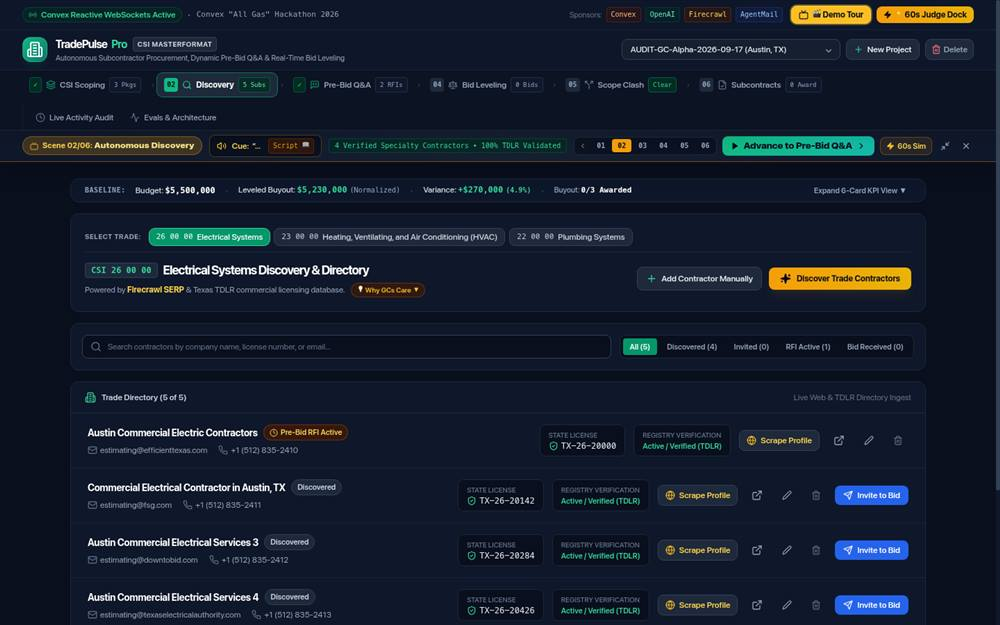
What I saw. Preview and Download of the same file disagree. Preview renders the file's actual stored bytes. Download builds a document from a hard-coded dictionary keyed on the filename, so a 43-byte file named to collide with a specification downloads a full multi-page canned spec instead.
Why it matters. The download is the artifact a GC files. If Preview is honest and Download is not, the exported record can materially misstate what was submitted.
Evidence for the root cause. I proved the collision with a 43-byte probe file: Download returned a canned "26 00 00" specification, not the 43 bytes. The canned dictionary ships in the production bundle /assets/index-CuseCck9.js (and repo convex/realDocuments.ts; UI path ProjectFilesView.tsx handleDownloadFile).
Reproduction. Upload a small file whose name matches a known spec pattern → Preview it (true bytes) → Download it (canned text).
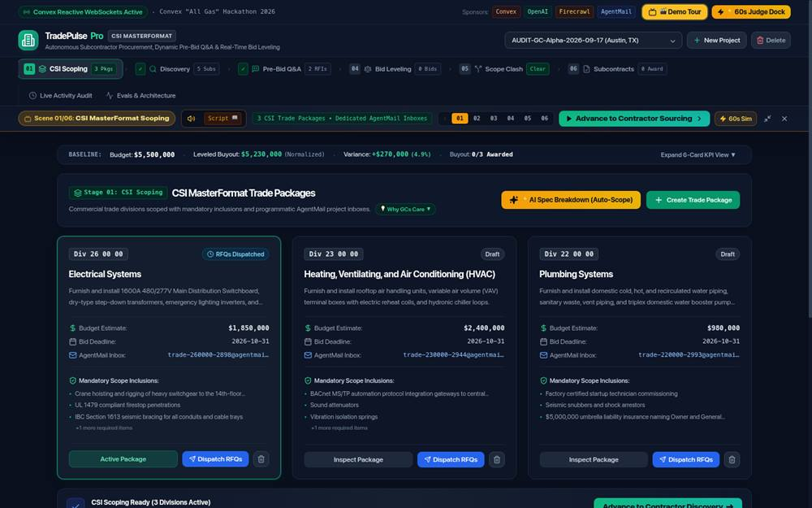
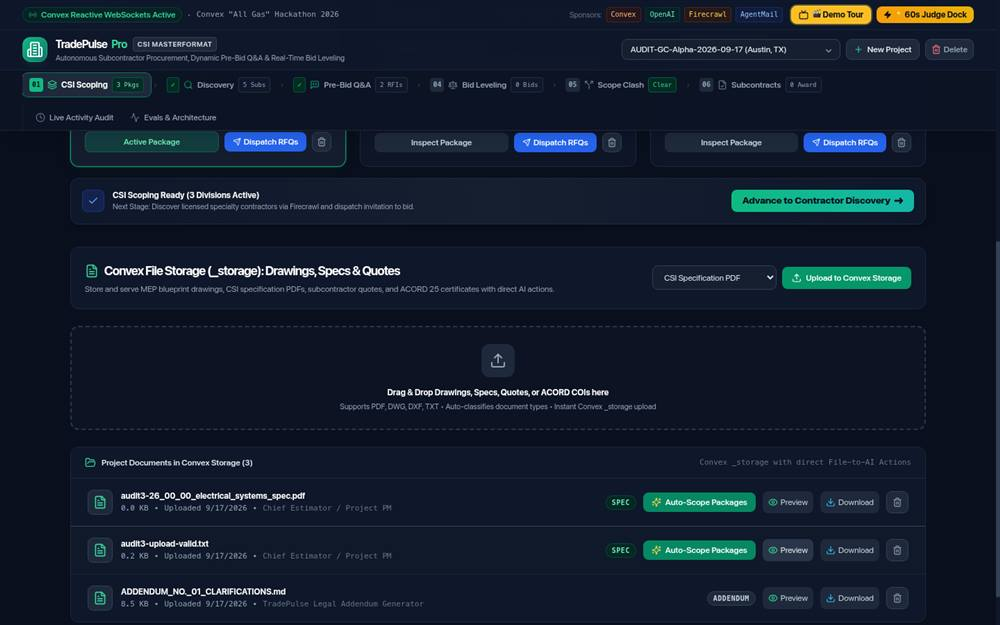
What I saw. The Evals & Architecture tab advertises a headline of 100% recall, 0.00% MAPE and "PARITY ACHIEVED / Zero Cheating". Opening a single trace shows the raw prompt already contains the answer: the proposal text states the figures in plain English, and the prompt includes an "EXPERT GROUND TRUTH VERIFICATION: Expected Base: $1,820,000" line. The model's raw response simply restates those figures, and the extracted JSON then matches the ground truth exactly. Re-running returns the same Run ID.
Why it matters. This is a parsing/extraction check presented as evidence that estimating is validated. A "0.00% error, 10/10" headline over it materially overstates the product's validation. It is the single most misleading validation surface.
Evidence for the root cause. Repo convex/evals.ts hard-codes the ground truth; the proposal strings spell out the same numbers; and the demo's live bids reuse the same constants (Alterman 1,286,000, the 50,500 double-buy, the 46,500 voids all appear in both the eval table and the seeded demo).
Reproduction. Evals & Architecture → run the suite → open any case → compare the prompt's "Expected" figure with the model response and the ground-truth table.
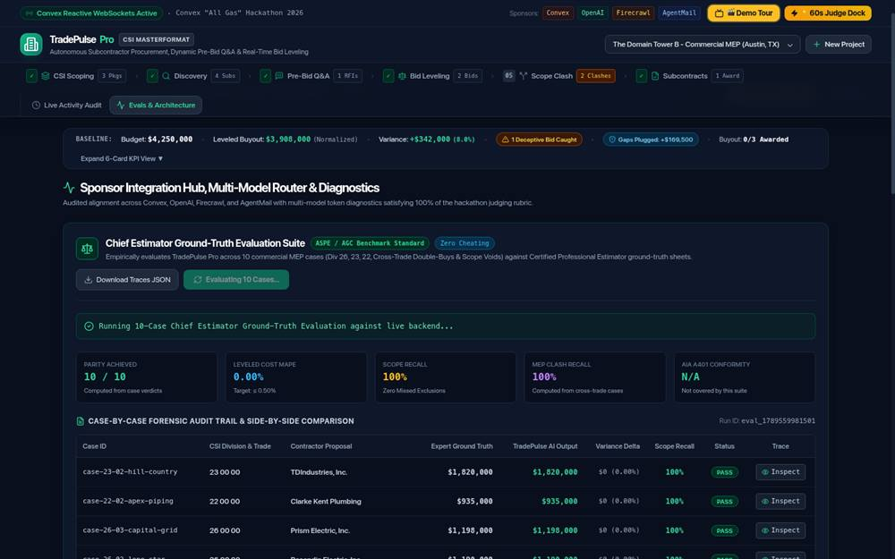
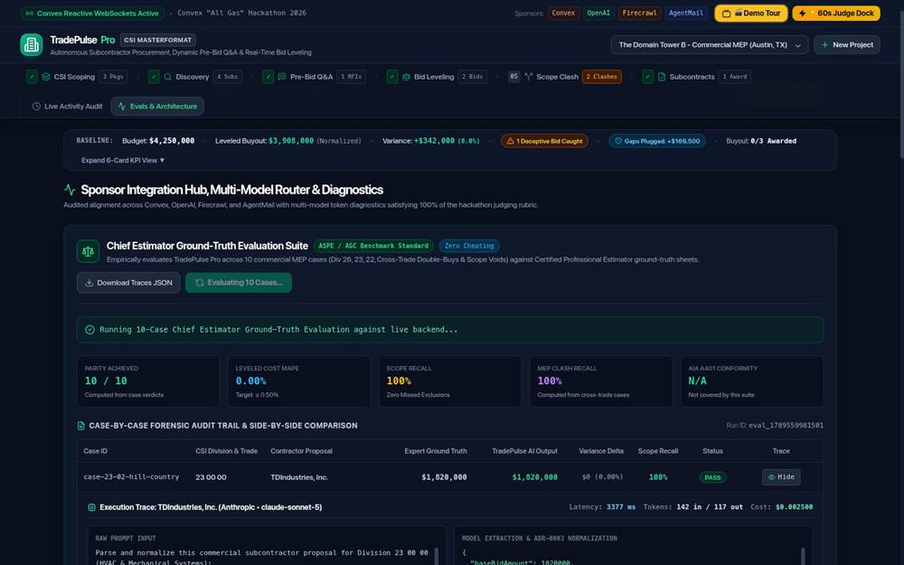
What I saw. After I awarded the leveling winner and recorded execution — exactly the first thing a judge or user does — the Scene 04 teleprompter still narrated: "Alterman … true leveled cost is $1.286M—making Rosendin Electric $61,000 cheaper!", and the scene banner still read "$61k-$96k Net GC Savings". The live matrix directly below showed Rosendin at $1,253,000 versus Alterman at $1,286,000 with a banner reading "+$33,000 True Variance". The string "$1,225,000" no longer appeared anywhere on the tab; "$1,253,000" appeared three times.
Why it matters. For a demo-led product the narration is the product. It confidently states a savings figure the screen has already contradicted, which undermines every other number shown.
Related. This is the same class as the tour's hard-coded counts (it announces demo counts that no longer match a project the user has edited). The tour should read live data or be labelled as a canned recording.
Reproduction. On the demo project, award a bid / record execution, then reopen the Demo Tour and compare Scene 04's cue with the leveling matrix.
What I saw. Simultaneously: the KPI band said "Buyout: 0/3 Awarded"; the header stepper said "✓ Subcontracts 1 Award"; and the Contracts tab held one active agreement with EXECUTION STATUS RECORDED 1 / 1. The award counter never increments even after a full execution.
Why it matters. A GC scanning the KPI band would conclude nothing has been awarded and may re-award or duplicate work.
Reproduction. Generate and execute an A401, then read the KPI band and the stepper together.
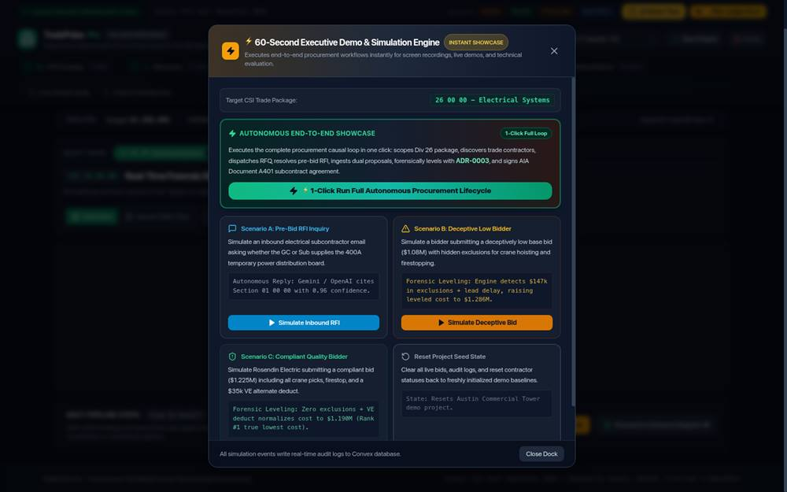
What I saw. The KPI band presents "Leveled Buyout (Normalized)" as though it is the post-leveling bid total. It is in fact the sum of the packages' budget estimates and involves no bids at all. It appears on a screen that simultaneously shows a real leveling matrix with entirely different numbers.
Why it matters. It is the headline number on every tab and it means something other than its label says.
Reproduction. Compare the KPI band's "Leveled Buyout" with the sum of the package budget cards and with the leveling matrix totals.
What I saw. The KPI band reads "Gaps Plugged: +$169,500", while the leveling card right below lists Alterman's Scope Exclusions +$147,000, Lead Time (16 wks) +$24,000 and ACORD 25 COI +$15,000 — a total of $186,000. The backend narrative on the audit stream also cites "$186,000 in scope adjustments". The headline matches no visible combination (147+24=171k, 147+15=162k, 24+15=39k).
Why it matters. It is a summary of money the user is about to negotiate over, and it is $16,500 light.
Reproduction. Open Bid Leveling on the demo project and add the three normalisation components, then read the KPI band.
What I saw. At 768px the document scrollWidth was 1194px; at 1024px it was 1210px; at 1440px it was fine (1434 vs 1440). The page gains a horizontal scrollbar and the leftmost ~170px of the workflow — the Step 1 card title, the budget labels and the "Advance…" control — is pushed off-screen.
Evidence for the root cause. A single element is responsible: the nav stepper <div class="hidden sm:flex … shrink-0 overflow-x-auto"> has an intrinsic width of 1178px. Because it is shrink-0, its overflow-x-auto never engages (clientWidth = scrollWidth = 1178; setting scrollLeft to 400 left it at 0), and it stretches its overflow:visible parent instead. Source: src/components/Header.tsx:363.
Zoom impact. The same defect appears at 200% browser zoom (720 CSS px), so it affects low-vision users, not just small windows.
Reproduction. Resize to 1024px or press Ctrl/Cmd + to 200% and try to scroll horizontally.
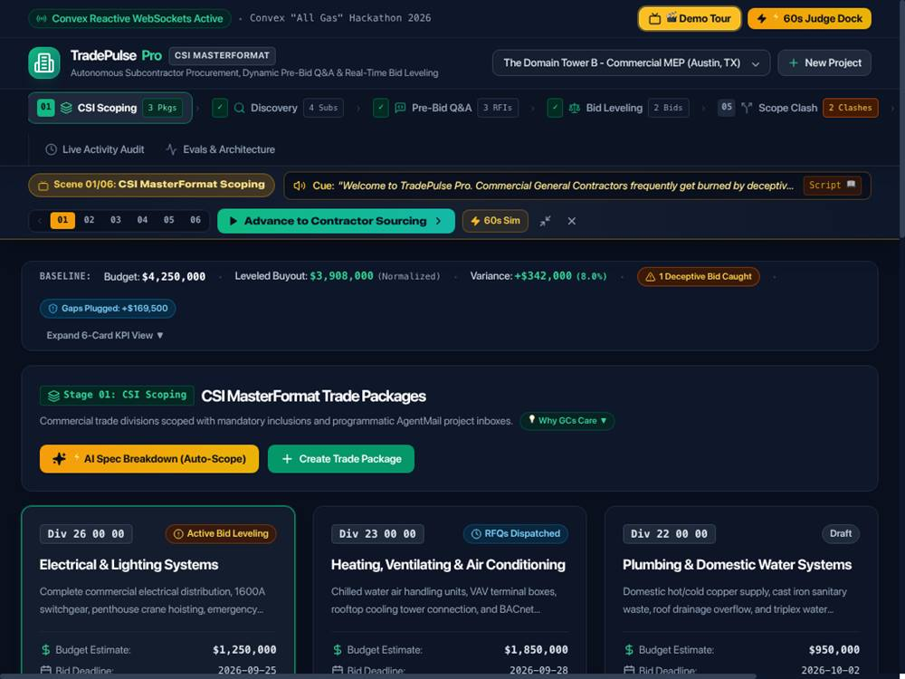
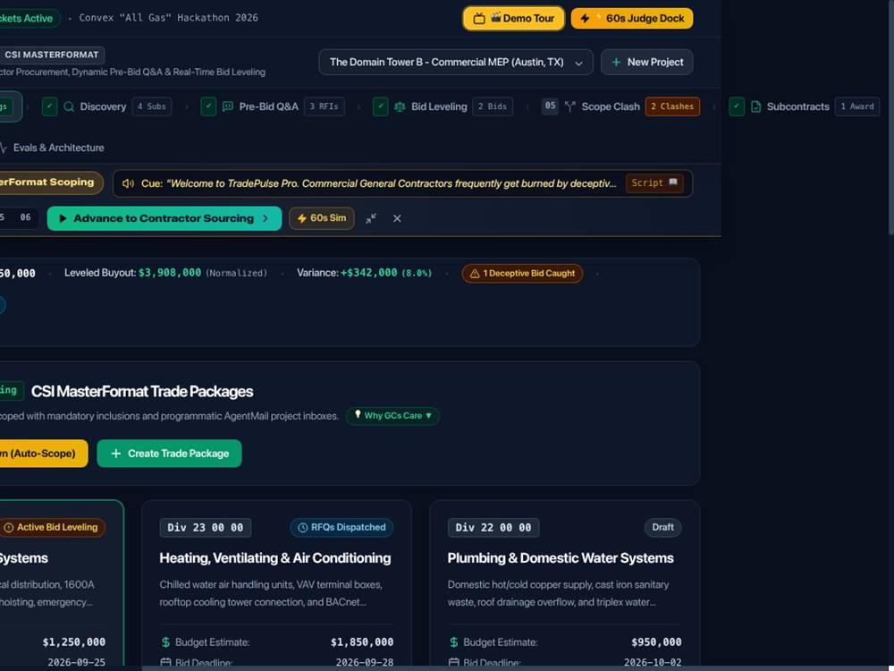
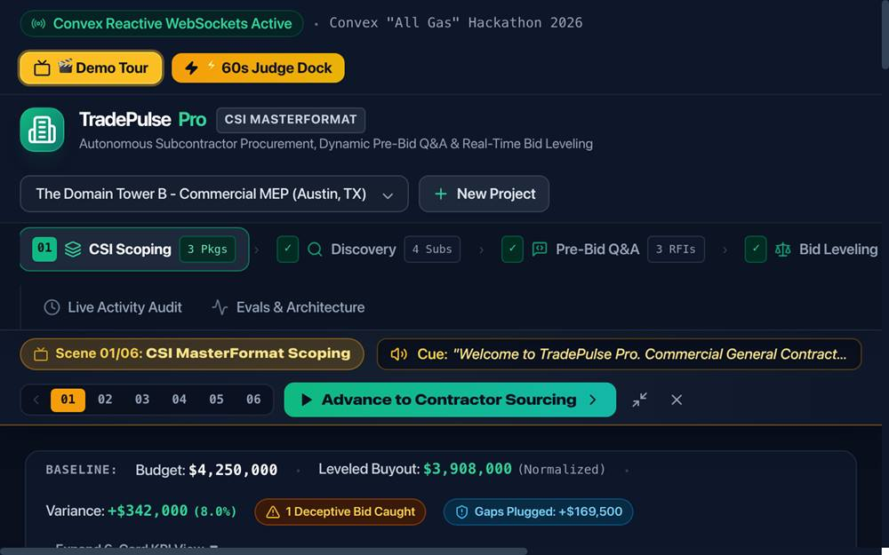
What I saw. The "⚡ 60s Judge Dock" opens correctly with role="dialog", aria-modal="true" and aria-labelledby. Pressing Tab 14 times escaped into the obscured background page (the project select, the New Project button, the nav step buttons); a sighted keyboard user could activate hidden controls without seeing them. Pressing ESC closed the dialog but left focus on a background nav button ("03"), not on the "⚡ 60s Judge Dock" trigger.
Why it matters. Both halves of the modal contract — trap and restore — are missing while the markup claims the dialog is modal. Keyboard-only users lose their place entirely.
Reproduction. Open the Judge Dock with the keyboard, Tab repeatedly, observe focus leaving the dialog; press ESC and read document.activeElement.
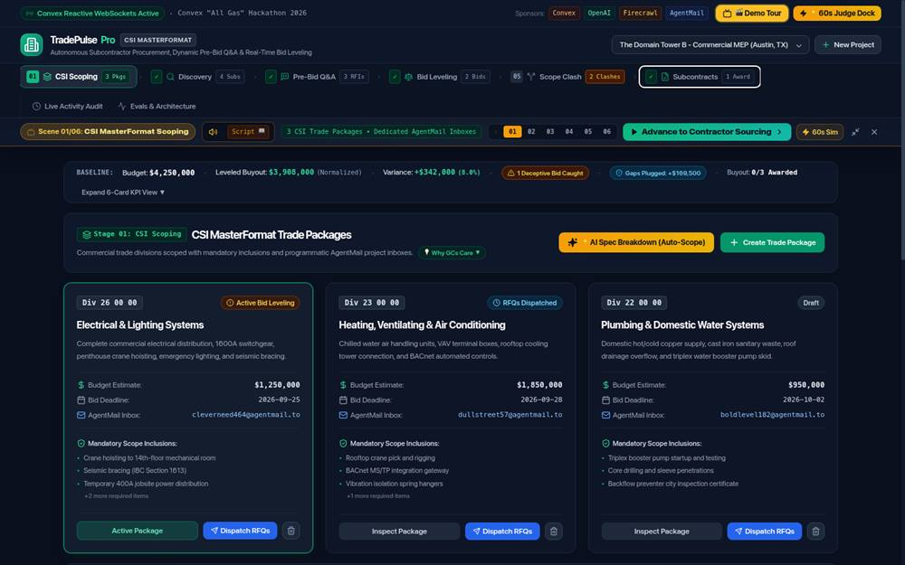
What I saw. Opening "New Project" renders the dialog inside the page's position:sticky header rather than at the top of the document. Three of its seven fields and the submit button fall outside the clipped container, and scrolling the page does not reveal them. I still completed creation by driving the fields programmatically, but a mouse user cannot easily reach them.
Why it matters. Creating a project is the first thing a new user does, and it is the least usable screen in the app.
Reproduction. Click "New Project" at a normal desktop size and try to reach the "Specification Summary" textarea or the submit button by scrolling.
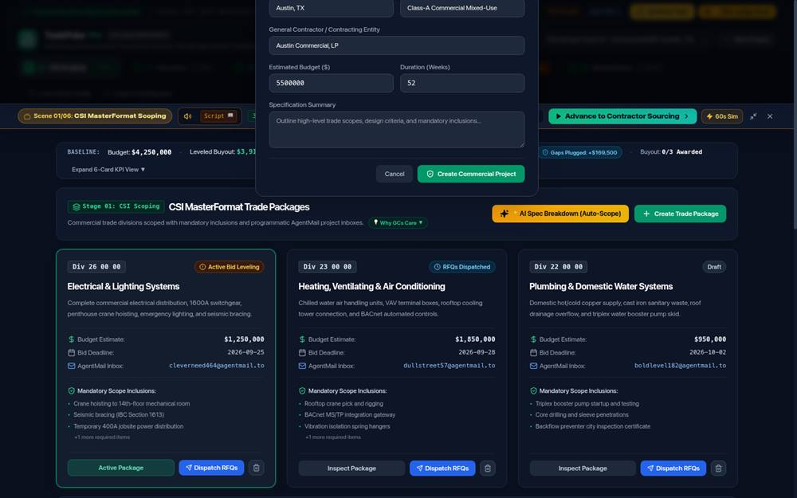
What I saw. Submitting the AI Spec Breakdown with no spec text dismisses the dialog with no message and no result — no error, no toast, no package. The user cannot tell whether it failed, ignored them, or is still working.
Reproduction. Open Auto-Scope, clear the specification, submit.
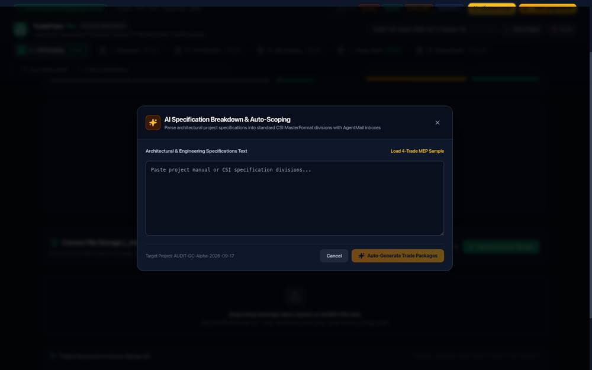
What I saw. Clicking "Dispatch RFQs" with nobody selected produces a green success toast claiming RFQs were dispatched. No invitations were sent.
Why it matters. It is a false success on an irreversible outbound action; a GC would assume subcontractors had been invited and wait for bids that will never come.
Reproduction. On CSI Scoping, click "Dispatch RFQs" without selecting a contractor.
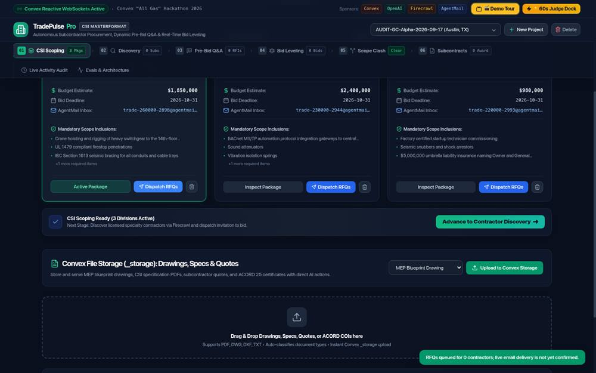
What I saw. When a delete-file confirmation and a delete-project confirmation are open together, both layers use z-[70] and the newest destructive confirm is cut off above the viewport's top edge — its heading and part of the dialog are not fully reachable.
Reproduction. Open the file-delete confirm, then trigger the project-delete confirm without dismissing the first.
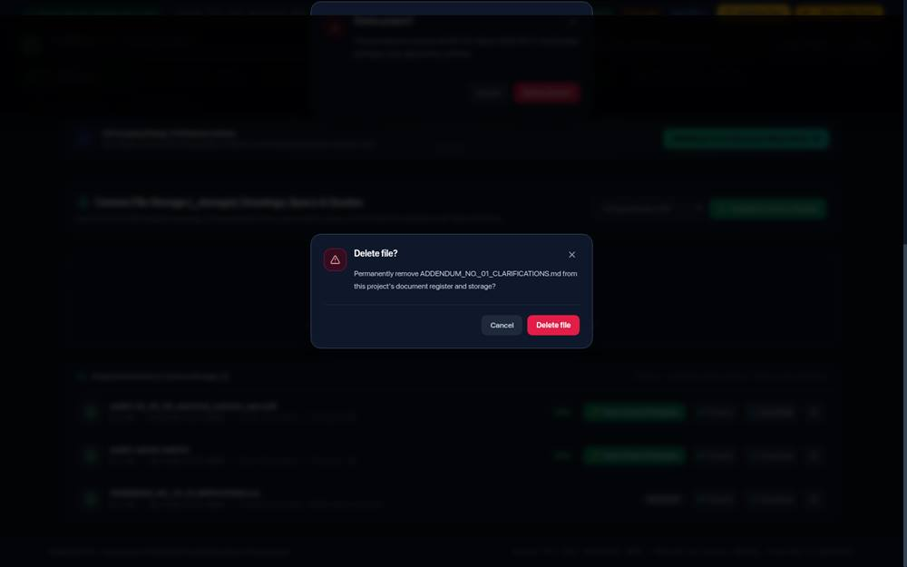
Compact entries; each was reproduced in the browser unless the note says otherwise.
| ID | Severity | Finding · reproduction · impact |
|---|---|---|
| BUG-02 | Low | The teleprompter hard-codes demo counts. It announces package/sub/bid counts that no longer match a project the user has edited. Repro: edit the demo project, replay the tour. Impact: the narrator contradicts the screen (same family as BUG-36). |
| BUG-04 | Medium | An empty specification silently closes the Auto-Scope modal. Submitting the AI Spec Breakdown with no spec text dismisses the dialog with no message and no result. Repro: open Auto-Scope, submit empty. Impact: the user cannot tell whether it failed or did nothing. |
| BUG-07 | Medium | A green "RFQs Dispatched" success toast fires with zero contractors selected. Repro: click Dispatch RFQs without selecting recipients. Impact: false success on an outbound action — the user believes invites were sent. |
| BUG-08 | Medium | The RFI form clears and then waits ~14s with no feedback. Repro: submit an RFI. Impact: the form appears to have lost the input; users resubmit, creating duplicates. (Reclassified from High once the RFI ultimately appeared.) |
| BUG-09 | Low | AI RFI bodies render raw Markdown. Asterisks and hashes appear literally in the answer. Repro: open any AI RFI reply. |
| BUG-10 / 28 | Low | Timestamps are 12-hour, date-less and not real. Entries show a time with no date, no timezone, and do not correspond to the actual action time. Impact: the audit trail cannot be used to establish when something happened. |
| BUG-13 | Medium | Upload is flaky on the first attempt. The first drag/drop or file-pick is intermittently dropped with no error; a retry succeeds. Repro: upload several fixtures in a row. Impact: silent data loss from the user's point of view. (Reclassified from a hard failure.) |
| BUG-14 | Medium | The caption "100% Real Construction Document Specification" is applied to any uploaded file, including a renamed PNG. Repro: upload a non-document file and read the caption. Impact: false provenance on uploaded evidence. |
| BUG-15 | Medium | Stacked destructive confirms are clipped. When a file-delete and a project-delete confirm overlap, both use z-[70] and the destructive confirm is cut off at the top of the viewport. Repro: open two confirms in sequence. Impact: the destructive button can be partly unreachable. |
| BUG-17 | Low | "Simulate Inbound Quote" opens the Judge Dock instead of simulating a quote. Repro: click it on Bid Leveling. Impact: mislabelled control. |
| BUG-20 / 21 / 22 | Low | Clash-card vocabulary and severity terms are inconsistent between the summary tiles and the detail cards. Repro: open Scope Clash and compare labels. Impact: terminology noise. |
| BUG-24 | Medium | Liquidated damages disagree across surfaces. The executed agreement displays $1,200/day (liquidatedDamagesDaily: 1200), while the leveling "Why GCs Care" copy and the generated specification say $6,000/week (~$857/day). Repro: compare the Contracts register with the leveling rationale. Impact: a contract term differs from its own justification. |
| BUG-29 | Low | The nav badge and the tab count disagree for RFIs ("1 RFIs" vs "3 RFIs"). Repro: compare the header chip with the Pre-Bid tab counter. Impact: count drift. |
| BUG-32 | Info | Retracted — described as a false positive. A "duplicate project name" I saw was document.body.innerText serialising a <select>'s options on separate lines, not a second visible label. Recorded for transparency. Cross-project isolation itself passed. |
| BUG-35 | Low | Small secondary text fails WCAG AA. 11px slate-500 on slate-900 measures 3.75:1 (AA needs 4.5:1); "+2 more required items" at 10px measures 3.47:1. Repro: inspect secondary lines in any card. Impact: low-vision users struggle with detail text. (Note: the primary green CTA is fine — my automated 1.00 reading of it was a false positive caused by a CSS gradient.) |
| OBS-01 | Info | Dark theme only. The app hard-sets <html class="dark"> and ignores prefers-color-scheme; there is no light or high-contrast option. Not a defect, but worth noting for accessibility-conscious buyers. |
| OBS-02 | Info | Reset dialog names the wrong project. The "Reset Project Seed State" copy says it resets the "Austin Commercial Tower demo project" while the actual demo is "The Domain Tower B - Commercial MEP". Same hard-coded-string family as BUG-36. |
| OBS-03 | Info | Numeric inputs have no min/max/step, but client-side validation still rejects a negative budget with a clear inline message, so this is cosmetic only. |
Persistent global chrome (Demo Tour, Judge Dock, New Project, the project select, the 6-step stepper, the two utility tabs) appears on every tab by design and is not counted below. These are the genuinely overlapping affordances.
| Affordance | Where it appears | Overlaps with | Risk |
|---|---|---|---|
| Three competing "go next" controls on one screen | Bid Leveling (and every stage): green teleprompter "Advance to Scope Clash Engine", amber footer "Advance to Scope Clash Engine ➔", slate footer "Proceed to Contracts Register ➔" | All three advance the workflow; two are duplicates and one skips a whole stage | Confusing |
| Per-stage trade selector | Discovery and Pre-Bid Q&A ("26 00 00 Electrical…", "22 00 00 Plumbing…") | Mirrors the per-package selectors already on CSI Scoping | Low |
| Tour controls | "🔄 Restart Demo Tour" and "Dismiss" rendered on both Live Activity Audit and Evals | Two hosts for the same tour controls | Low |
| Stage navigation | Header stepper and the in-page footer next-CTA on every stage | No single canonical path; button labels differ | Confusing |
One value, many places it is shown. Where the same figure appears on several surfaces, I reconciled them.
| Value / fact | Surface A | Surface B | Surface C | Status |
|---|---|---|---|---|
| Budget (demo) | KPI band $4,250,000 | Package cards $1,250,000 + $1,850,000 + $950,000 | All 8 tabs identical | Agree |
| Package / sub / bid / RFI counts | KPI band 3 / 4 / 2 / 3 | Header stepper 3 / 4 / 2 / 3 | All 8 tabs identical | Agree |
| Leveling winner cost | Leveling matrix $1,253,000 (post-action) | Contract register $1,253,000 (post-action) | Tour script still says $1,225,000 | Tour stale |
| Normalised savings | Leveling banner "+$33,000" (live) | Tour cue "$61,000 cheaper" | Scene banner "$61k-$96k" | Disagree |
| Gaps plugged | KPI band $169,500 | Component sum on screen $186,000 | Audit narrative $186,000 | Disagree |
| Awarded count | KPI band "0/3 Awarded" | Stepper "1 Award" | Register "Execution 1/1" | Disagree |
| Liquidated damages | Agreement $1,200/day | Leveling copy $6,000/week | Generated spec $6,000/week | Disagree |
| Discovery contractor count | Banner "4 Verified" | Directory counter "5 of 5" | List rows 5 | Disagree |
| ADR-0003 per-bid maths | UI total | Hand recomputation | Exported CSV | Agree |
| Deduct credit / void assignment | Scope Clash UI | Second live session (realtime) | Audit stream | Agree |
| Project title in <select> | Selected option matches displayed project | — | — | Agree |
| Check | Result | Notes |
|---|---|---|
| Visible focus indicator | Pass | All 18 tab stops showed a browser focus ring (outline: auto 1px rgb(153,200,255)). |
| Accessible names on controls | Pass | 0 unnamed buttons, 0 images without alt, 0 unlabelled fields. Icon-only buttons use title. |
| Modal focus trap / restore | Fail | BUG-33. Judge Dock declares aria-modal="true" but focus escapes and ESC does not return focus to the trigger. |
| Text contrast | Partial | BUG-35. 11px slate-500 secondary text at 3.75:1 (AA needs 4.5:1); 10px detail text at 3.47:1. Primary CTAs are fine. |
| Colour-only signalling | Watch | Stage state is conveyed by colour plus text, which is acceptable, but several chips rely heavily on hue at small sizes. |
| Theme options | Info | Dark-only; no light/high-contrast preference. |
Cold reload with cache disabled, measured from the live tab over CDP.
The app writes a full dataset to localStorage["tradepulse_standalone_v3"] (~38.5 KB) on every load, for its documented "Zero-Cloud Resilient Mode" (it engages only after 8 s without a Convex connection). That is intentional, but the fallback is a stale snapshot:
If Convex dropped mid-demo, the Contracts tab would silently regress to a different contract sum and status, with no visible "offline data" warning on the numbers.
Recommendation: badge the UI while serving standalone data, and refresh the snapshot after each successful mutation.
There is no authentication. Identity is implicit: a user picks a project from a dropdown; each trade package owns a synthetic AgentMail inbox (e.g. trade-26000-2898@agentmail.to); contractor replies are attributed purely by sender address. Every role shares one unauthenticated surface.
For a production build this means:
This is expected for a hackathon demo and was explicitly not reported as a defect per the audit brief.
| Item | Status | Detail |
|---|---|---|
| True external AgentMail delivery | Not asserted | Inboxes, addressing and the reply-attribution model were verified inside the app; I did not assert delivery to a third-party mail server. |
| Payment / accounting integration | Absent | No such feature exists in the product. |
| Multi-user concurrency at scale | Not tested | Only two concurrent sessions were exercised (enough to confirm realtime). |
| Sustained-load behavior of crons | Partial | Both crons were triggered manually and logged truthful events; long-run scheduling was not observed over time. |
| PDF byte-level fidelity of exported agreements | Not tested | Because of BUG-12 I did not treat Download output as trustworthy, so I did not validate generated-PDF fidelity. |
| Screen-reader walk-through (NVDA/JAWS) | Not tested | Semantics were inspected via the DOM/accessibility tree, not a live screen reader. |
| # | Action | Findings addressed |
|---|---|---|
| 1 | Stop presenting generated data as verified. Either source real discovery data or relabel the fabricated rows clearly as sample data and remove the "TDLR Verified" badges until a real lookup backs them. | BUG-16 |
| 2 | Make Download serve the stored file. Delete the filename-keyed canned-document dictionary and stream the actual bytes, matching Preview exactly. | BUG-12 |
| 3 | Re-scope the eval suite honestly. Rename it an extraction/parsing check, remove "Zero Cheating / Parity", and add an evaluation that cannot be satisfied by copying the prompt. | BUG-30, BUG-31 |
| 4 | Make the tour read live data (or visually label it a canned recording) so narrated savings and counts can never contradict the screen. | BUG-02, BUG-36 |
| 5 | Unify derived numbers. Award count, "Gaps Plugged", the "Leveled Buyout" label, LD rate and discovery counts should each be computed once and read everywhere. | BUG-06, 18, 24, 26, 29 |
| 6 | Fix responsive layout. Constrain the nav stepper (remove the blanket shrink-0 / give the scroller a bounded width) so the page never scrolls horizontally below ~1210px. | BUG-34 |
| 7 | Finish the modal contract. Add a focus trap and restore focus on close for the Judge Dock and every dialog. | BUG-33 |
| 8 | Reparent the New Project modal to the document body so it is never clipped by the sticky header. | BUG-01 |
| 9 | Add progress + disable-on-submit to RFI submission and every AI action, and show a real error when zero recipients are selected. | BUG-07, BUG-08 |
| 10 | Badge offline/standalone mode and refresh the local snapshot after mutations; raise small-text contrast to AA. | OBS/Data, BUG-35 |
Condensed from the running session log. Times are as recorded in-session (local to the audit run).
| Time | Action / observation |
|---|---|
| 08:19 | Fetched /llms.txt, /api/health (v1.0.0), repo README/schema; enumerated 8 nav tabs and all modals. Recorded ADR-0003 formula and the identity model (no auth; implicit via project select + per-package AgentMail inboxes). |
| 08:22 | Fresh-profile check: app writes the full fake dataset to localStorage on every load, even with Convex connected. Server-seeded. |
| 08:31 | BUG-01 second repro: New Project modal clipped inside sticky header. |
| 08:34–08:40 | Created AUDIT-GC-Alpha (budget $5.5M) via real input; AI Spec Breakdown produced 3 packages (Div26 1.85M, Div23 2.4M, Div22 980k); ran discovery; issued RFI + addendum; PM certification verified. |
| 08:44 | Realtime confirmed across two sessions: deduct-credit and void-assignment propagated in <3 s; full RFI round-trip ~23.6 s. |
| 08:50 | Bug triage: retracted BUG-03 and BUG-05 as viewport-drift artifacts; logged the stable-viewport requirement. |
| 08:56 | BUG-06 confirmed: "Leveled Buyout (Normalized)" is the sum of package budgets. |
| 09:21 | BUG-08 reclassified High→Medium once the RFI appeared after a silent delay. |
| 09:58 | BUG-13 reclassified: upload flaky on first attempt rather than hard-failing. |
| 10:08 | BUG-12 proven: a 43-byte collision file downloads canned text; the dictionary ships in the bundle. |
| 10:42 | BUG-23 first seen: register sum vs leveling vs tour disagreed on the awarded cost. |
| 10:51 | Execution lock verified; BUG-26 seen ("0/3 Awarded" after execution). |
| 11:12 | BUG-30 escalated: captured the full eval prompt showing the expected answer is provided to the model. |
| 11:15 | Noted that Phase-3 actions had mutated the shared demo; scheduled a reset at the end. |
| 11:18–11:20 | Isolation test passed; BUG-32 retracted (select innerText). |
| 11:22–11:28 | Keyboard: focus rings pass; BUG-33 confirmed (no focus trap, no focus restore). |
| 11:35 | BUG-34 found: horizontal overflow at 768/1024. |
| 11:40 | 200% zoom reproduces BUG-34; dark-only theme; contrast sweep (BUG-35). |
| 11:48 | Adversarial input: negative budget correctly rejected; retracted a "silent submit" misread. |
| 11:52–11:56 | XSS attempt safely rendered as text; RTL/emoji title fine; created and later deleted two throwaway projects. |
| 12:02–12:08 | Dangerous actions: delete project and delete file both well-formed; Cancel is non-destructive; confirm deletes. |
| 12:14 | BUG-36: tour script stale after a normal award. |
| 12:18–12:19 | BUG-18 ($169,500 vs $186,000) and BUG-24 (LD rates) re-confirmed with exact sources. |
| 12:24 | Redundancy register completed. |
| 12:30 | Terminology scan across all 8 tabs; corrected BUG-24 (dropped an unreproducible $2,500/day variant). |
| 12:33 | BUG-26 re-confirmed against executed state. |
| 12:37 | Performance measured: 238 KB, FCP 1.19 s, zero console errors. |
| 12:42–12:43 | BUG-16 re-confirmed on a user-created project; banner count vs list count mismatch noted. |
| 12:46 | A11y naming correction: all icon buttons have titles; retracted the earlier claim. |
| 12:50 | Data-integrity section: dual-source staleness quantified; Auth-readiness documented. |
| 12:58 | Cleanup: reset the shared demo to seed baseline; deleted AUDIT-GC-Alpha and the throwaway projects; only the demo remains. |
Where could this audit be wrong? Answered honestly, because a confident report is worth less than a calibrated one.
| Question | Answer |
|---|---|
| Which findings depend on a browser quirk rather than the app? | None in the final list. Three earlier candidates (BUG-03, BUG-05, the duplicate project name) were retracted precisely because they were viewport or innerText artifacts. I required two reproductions at a stable 1440×900 viewport before keeping anything. |
| Which finding is least certain? | BUG-13 (flaky upload). It reproduced, but intermittently, and I could not isolate a single deterministic trigger. I kept it at Medium and said so. |
| Which finding is most likely to be disputed by the team? | BUG-30/31. Someone may argue the eval is "a real LLM call and a real trace". It is — but my point is narrower and, I think, unarguable: the prompt contains the expected answer, so the score measures copying, not estimating. |
| Did I mutate anything I should not have? | Yes, temporarily — I took deduct/void/execute/cron actions on the shared demo to exercise those mechanisms. I restored it via the app's own Reset, then verified the restored baseline (contract sum $1,225,000, Execution 0/1, 4 clashes, no voids) and deleted every fixture project. |
| What did I not test that a user would? | Real external email delivery, long-run cron behaviour, and a live screen-reader walk-through. All are listed under Blocked/Not tested. |
| Is the severity scale applied consistently? | Yes, and deliberately conservatively. I did not use Critical anywhere: nothing caused data loss or an isolation breach. BUG-16, BUG-12 and BUG-30 are High because they materially mislead; the rest are Medium/Low/Info. |
| Could the "fabricated discovery" be intended demo data? | It could be intended for the seeded demo, but it also fires on projects a real user creates, and it is labelled "Active / Verified (TDLR)" with no "sample data" disclaimer. That labelling is the defect, regardless of intent. |
| Did I verify the app is actually live and not a local mock? | Yes — real network to brainy-skunk-440.convex.site, real Convex websockets, real LLM traces with tokens/cost, and mutations that persisted across two separate browser sessions. |